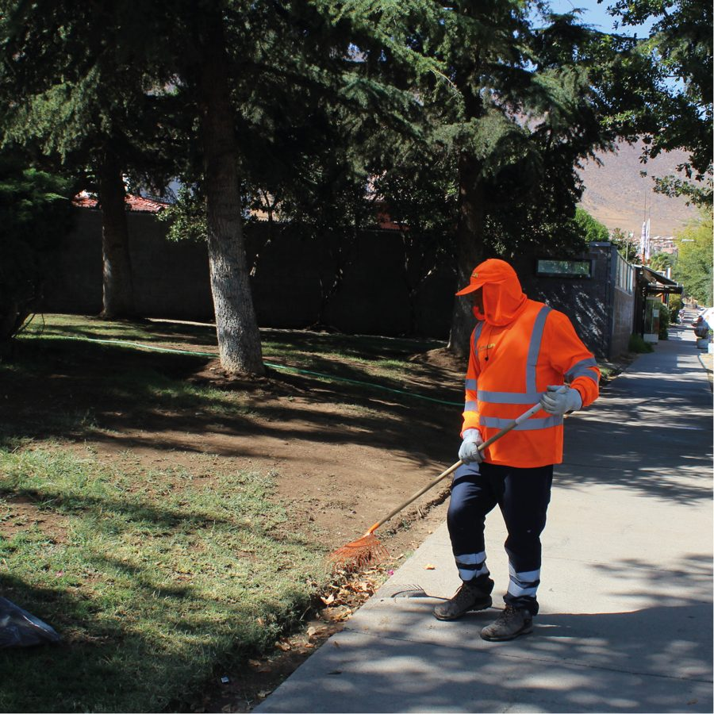
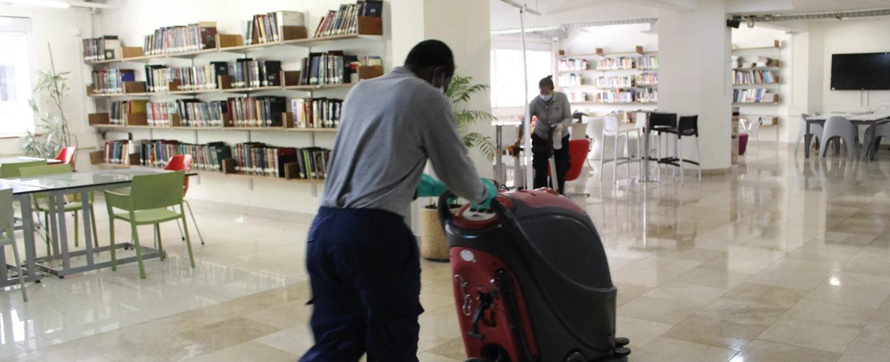
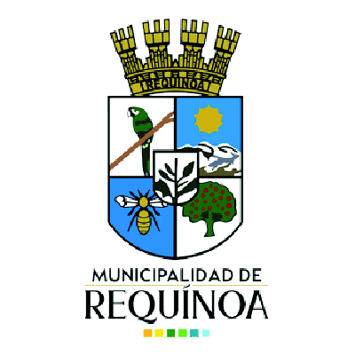
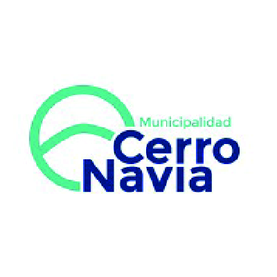
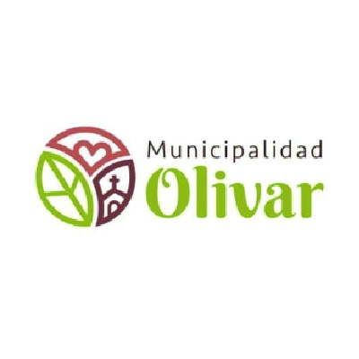
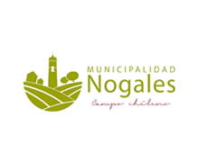
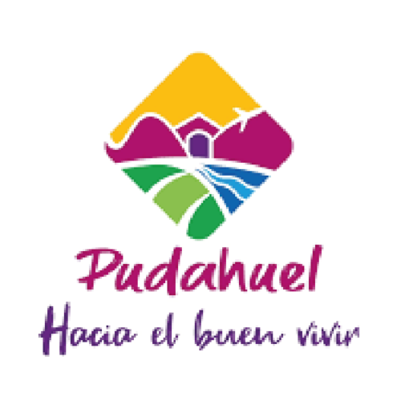
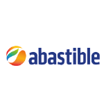
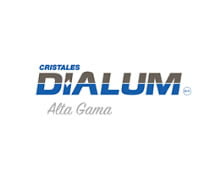
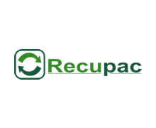

Residuos · limpieza · áreas verdes
Una amplia flota de camiones y equipos de recolección, con procesos estandarizados bajo normativas nacionales e internacionales.
Servicios
Servicios para municipios, industrias y empresas, con personal capacitado y control operacional.


Economía circular
Toca cada etapa para ver cómo la gestionamos.
Etapa 1
Cada cliente genera residuos distintos: orgánicos, industriales, peligrosos y no peligrosos. Partimos por saber qué se retira, dónde y con qué frecuencia.
Planificar mi gestión de residuosLey REP
La Ley 20.920 obliga a productores e importadores de ciertos productos a hacerse cargo de sus residuos. Tresur puede apoyar la logística de retiro y transporte.
Consultar por mi empresaTexto de ejemplo: la redacción final debe ser validada por Tresur y su asesoría legal.
Simulador
Una estimación rápida para conversar con un ejecutivo. No es un cálculo certificado.
Valores de ejemplo para la maqueta, no son factores de emisión oficiales.
Clientes
 Lo Espejo
Lo Espejo Lampa
Lampa Independencia
Independencia
Requínoa
Cerro Navia
Olivar
Nogales Machalí
Machalí
Pudahuel
Abastible
Dialum
RecupacCotizar
Cuéntanos qué se retira, dónde y con qué frecuencia. Armamos la propuesta.
Grupo VL
¿Necesitas algo más? Ve a la empresa que corresponde, cotiza varios servicios con un solo contacto o pide una propuesta para una licitación.
Maqueta de diseño con fotos y datos publicados hoy por Tresur. Lo marcado "Ejemplo" debe validarse antes de publicar.